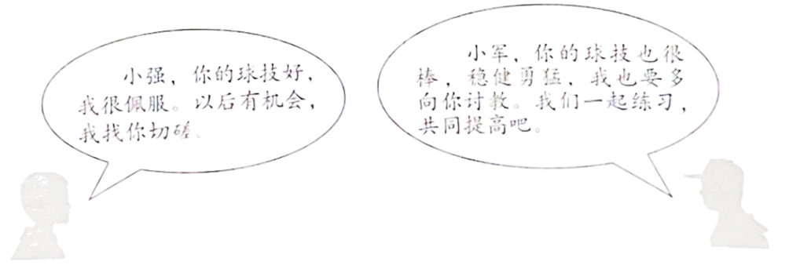
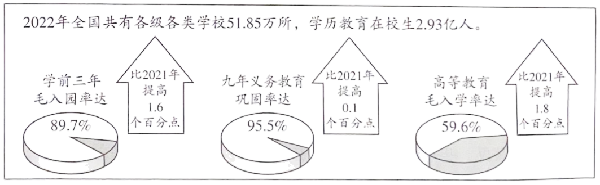
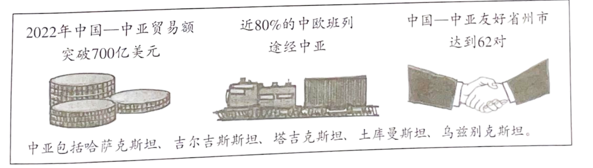
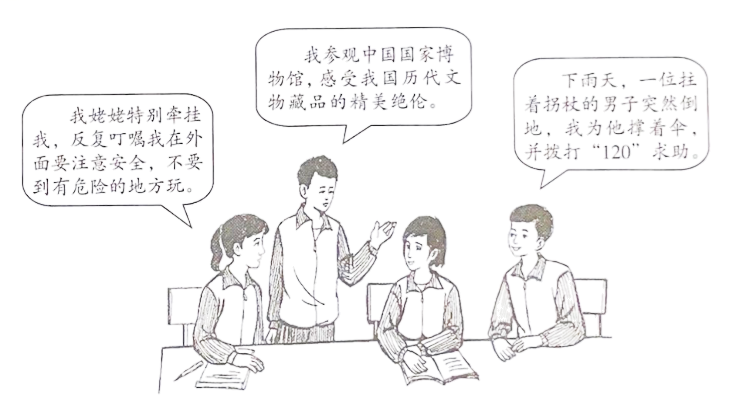
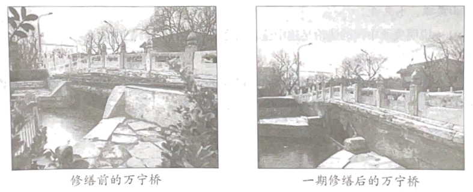
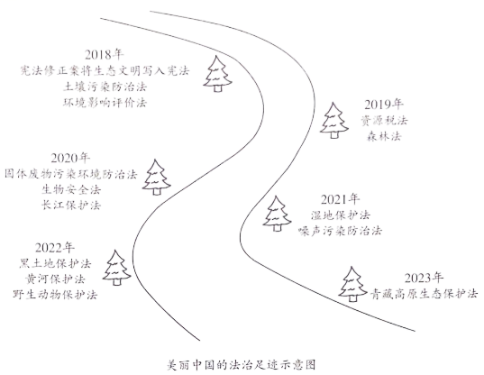
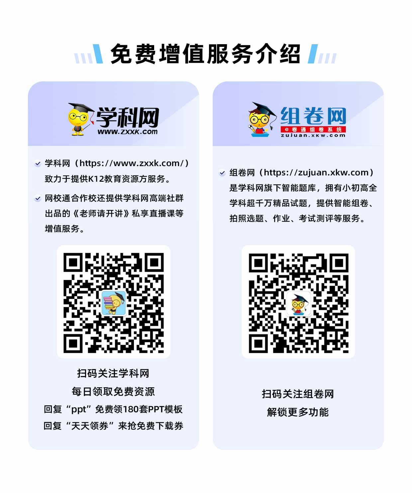

2023年北京市中考政治真题 原卷解析
2023年北京市中考道德与法治真题
考生须知
1．本试卷共8页，共两部分，共20题，满分70分。考试时间70分钟。
2．在试卷和草稿纸上准确填写姓名、准考证号、考场号和座位号。
3．试题答案一律填涂或书写在答题卡上，在试卷上作答无效。
4．在答题卡上，选择题用2B铅笔作答，其他试题用黑色字迹签字笔作答。
5．考试结束，将本试卷、答题卡和草稿纸一并交回。
第一部分
本部分共15题，每题2分，共30分。在每题列出的四个选项中，选出最符合题目要求的一项。
1. 中国共产党第二十次全国代表大会，是在全党全国各族人民迈上全面建设社会主义现代化国家新征程、向第二个百年奋斗目标进军的关键时刻召开的一次十分重要的大会。大会高举的伟大旗帜是（ ）
A. 贯彻新发展理念B. 全面推进乡村振兴
C. 推动高质量发展D. 中国特色社会主义
【答案】D
【解析】
【详解】时政题，解析略。
2. 在某校心理游园会的“微笑欢迎你”驿站，同学们制作果蔬笑脸，画出自己的微笑卡，将自己的“坏情绪”写在卡片上丢进“情绪回收站”，微笑着在满是笑脸的背景墙前拍照留念……这些活动旨在引导学生（ ）
①学会调节情绪，化解烦恼 ②尊重他人感受，关爱自己
③保持积极心态，健康生活 ④避免负面情绪，传递温暖
A. ①②B. ①③C. ②④D. ③④
【答案】B
【解析】
【详解】本题考查调节情绪。
①③：同学们将自己的“坏情绪”写在卡片上丢进“情绪回收站”，引导学生学会调节情绪，化解烦恼 ，并且保持积极心态，健康生活，故 ①③符合题意；
②：材料未体现尊重他人感受，关爱自己，故②不符合题意；
④：不用避免负面情绪，要学会调节负面情绪，负面情绪对我们成长也有意义，故④说法错误；
故本题选B。
3. 小强和小军是好朋友，两个人都是校乒乓球队的主力。

他们的对话启示我们（ ）
①友谊在竞争中得到升华、深化 ②要想了解自己，最好问问别人
③集体成员交流互鉴，共同进步 ④集体要承认个人利益的合理性
A. ①③B. ①④C. ②③D. ②④
【答案】A
【解析】
【详解】本题考查正确认识友谊、美好集体的特征。
①③：从小强和小军的对话中我们可以感受到竞争并不必然伤害友谊，启示我们友谊可以在竞争中得到升华、深化；也启示我们在集体生活中，集体成员之间交流互鉴，合作学习，共同提高，①③说法正确；
②：体现的是认识自己的方法，②说法与题不符；
④：体现的是正确处理集体利益和个人利益的关系，④说法与题不符；
故本题选A。
4. 打开手机软件，系统自动读屏，并一一给出语音提示。看新闻，靠文字识别技术“读”出资讯；想购物，图片转语音“描绘”商品详情……借助信息无障碍技术，视障者可以在工作、生活中，更好地使用互联网产品。这说明（ ）
A. 网络为经济发展注入新的活力
B. 网络丰富日常生活，“信息节食”很重要
C. 技术使网络环境更加便利、包容、温暖
D. 信息无障碍建设成为各行业的自觉行动
【答案】C
【解析】
【详解】本题考查创新让生活更美好。
C：分析题文，自动读屏、语音提示、文字识别、图片转语音、信息无障碍技术等，结合所学知识可知，这说明技术使网络环境更加便利、包容、温暖；C正确；
A：题干没有体现网络为经济发展注入新的活力；A不符合题意；
B：“信息节食”在 题干中没有体现；B不符合题意；
D：信息无障碍建设并没有成为各行业的自觉行动；D错误；
故本题选C。
5. 社会生活离不开规则。有同学说，规则像道路上的斑马线，像悬崖边上的护栏，像过山车上的安全带。这一说法启示我们（ ）
①规则划定自由的边界，是自由的保障 ②违反规则就会受到法律的制裁
③规则是在人们达成共识基础上形成的 ④每个人要发自内心地敬畏规则
A. ①②B. ①④C. ②③D. ③④
【答案】B
【解析】
【详解】本题考查遵守规则
①④：分析题文，规则像道路上的斑马线，像悬崖边上的护栏，像过山车上的安全带，这启示我们每个人要发自内心地敬畏规则；规则划定自由的边界，是自由的保障；①④符合题意；
②：违反法律规则就会受到法律的制裁，②错误；
③：不符合题干主旨；③不符合题意；
故本题选B。
6. 1936年4月，一支红军部队经过杜正云居住的村子时，将一位病重的小战士托付给他的外公、爷爷和大伯等人照料。他们毫不犹豫地答应了，并表示一定尽力照顾好这位小红军。虽经积极救治，小红军还是病故了。每年清明节，杜家人都到墓前祭拜。杜正云也一直牢记长辈嘱托，把红军墓看好、守好。这则故事的题目最可能是（ ）
A. 明礼遵规，友爱互助B. 孝老爱亲，律己宽人
C. 脚踏实地，任劳任怨D. 笃守诺言，薪火相传
【答案】D
【解析】
【详解】本题考查践行诚信。
D：小战士的亲人答应了照顾小战士，并表示一定尽力照顾好这位小红军。杜正云也一直牢记长辈嘱托，把红军墓看好、守好。这是笃守诺言，薪火相传，故D正确；
ABC：选项说法在题文中没有体现，故排除ABC；
故本题选D。
7. 雷锋，一座不朽的丰碑。一代代国人用行动续写着厚重的“雷锋日记”。当“雷锋日记”写到2023年——
我在广袤的乡村热土上扎根，挥撒洒汗水。 | 我在边守疆中燃烧青春，践行铮铮誓言。 | 我用钉钉子的精神攻坚克难，锐意进取。 |
以上“雷锋日记”体现了（ ）
①历史川流不息，精神代代相传 ②热爱本职工作，珍惜劳动成果
③汲取榜样力量，平凡造就伟大 ④利用自身优势，服务家乡建设
A. ①③B. ①④C. ②③D. ②④
【答案】A
【解析】
【详解】本题考查弘扬民族精神。
①③：分析题文，一代代国人用行动续写着厚重的“雷锋日记”，这体现了历史川流不息，精神代代相传；汲取榜样力量，平凡造就伟大；①③符合题意；
②：题干没有体现珍惜劳动成果，②不符合题意；
④：题干没有体现利用自身优势，服务家乡建设，④不符合题意；
故本题选A。
8. 党的十八大以来，立法机关不断增强备案审查制度刚性，就法规、司法解释等规范性文件中的合宪性、合法性、适当性等问题开展审查研究。十年来，全国人大常委会共接收公民、组织提出的审查建议19200多件，推动、督促制定机关修改、废止各类规范性文件2万余件。这表明（ ）
A. 全国人大常委会是最高国家权力机关
B. 备案审查制度能够实现国家长治久安
C. 宪法法律尊严和国家法治统一得到有效维护
D. 宪法监督的对象是行使公权力的公职人员
【答案】C
【解析】
【详解】本题考查宪法监督。
C：分析题文，我国立法机关不断增强备案审查制度刚性，十年来，宪法监督取得巨大成效，表明宪法法律尊严和国家法治统一得到有效维护，C正确，符合题意；
A：全国人大是最高国家权力机关；A错误；
B：这夸大了备案审查制度的作用；B错误；
D：监察委员会监督的对象是行使公权力的公职人员；D错误；
故本题选C。
9. 某校开展防空知识宣讲，为同学们上了一堂生动的国防教育课；某镇“国家安全大篷车”移动展览在乡村巡展，把国家安全知识送到田间地头；某区在商务楼宇、繁华商圈等场所，开展系列别具特色的国家安全宣传教育活动。这些活动有利于（ ）
①公民树立总体国家安全观 ②公民自觉行使维护国家安全的权利
③丰富国家安全体系的内涵 ④推动全社会形成维护国家安全合力
A. ①③B. ①④C. ②③D. ②④
【答案】B
【解析】
【详解】本题考查维护国家安全。
①④：结合所学知识可知，开展系列别具特色的国家安全宣传教育活动，有利于公民树立总体国家安全观；推动全社会形成维护国家安全合力；①④符合题意；
②：国家安全是公民的基本义务；不是权利；②错误；
③：这并不会丰富国家安全体系的内涵；③错误；
故本题选B。
10. 北京市着力探索社区“微治理”，形成超大城市治理“首都样板”。某社区健全以党建引领为核心的协商议事机制，完善居委会、业委会、业主、物业服务企业和社会单位共同参与的“五方共治”机制，有效协调社区多元主体之间的关系，尽可能做到各类小问题、小矛盾“不出社区”。在这一探索中（ ）
①基层群众性自治组织的形式更加多样化
②社区居委会充分发挥了参政议政的职能
③居民直接行使民主权利，参与社区治理
④各方群策群力，共商共治解决社区难题
A. ①②B. ①④C. ②③D. ③④
【答案】D
【解析】
【详解】本题考查对基层群众自治制度的正确认识。
③④：依据题文描述，北京市着力探索社区“微治理”，形成超大城市治理“首都样板”的相关举措，说明居民直接行使民主权利，参与社区治理；各方群策群力，共商共治解决社区难题，③④说法正确；
①：题文中没有体现基层群众性自治组织的形式的多样化，①说法与题不符；
②：社区居委会是基层群众自治组织，没有参政议政的职能，②说法错误；
故本题选D。
11. 能用于手机的超薄柔性可折叠玻璃，厚度仅为A4纸的四分之一；普通手机可直连北斗卫星发信息，解决“不在服务区”难题；180千瓦高效率氢燃料电池发动机系统性能卓越，其电池寿命超过3万小时，是行业均值的两倍……我国在2023中关村论坛上发布的这些科技成果说明（ ）
①创新让生活更美好 ②创新要敢于打破常规，一味追求独特
③我国科技创新能力增强 ④创新是促进人的全面发展的根本途径
A. ①③B. ①④C. ②③D. ②④
【答案】A
【解析】
【详解】本题考查科技创新。
①③：结合所学知识可知，我国在2023中关村论坛上发布的这些科技成果说明创新让生活更美好；我国科技创新能力增强；①③符合题意；
②：创新要敢于打破常规，但不是一味追求独特，②错误；
④：教育是促进人的全面发展的根本途径，④错误；
故本题选A。
12. 建设教育强国是全面建成社会主义现代化强国的战略先导。上图是2022年我国教育事业发展取得的成绩单，由此可推断出（ ）

A. 教育是决定当代中国命运的关键抉择
B. 我国发展更加公平更高质量的教育
C. 我国各级各类学校数量有所增加
D. 我国建成全民终身学习的现代教育体系
【答案】B
【解析】
【详解】本题考查维护公平的举措。
B：题文中列举了我国教育事业发展取得的成绩，由此可知我国重视教育，致力于发展更加公平更高质量的教育，B说法正确；
A：改革开放是决定当代中国命运的关键抉择，A说法错误；
C：题文中体现的是我国教育事业的高质量发展，不仅仅是各级各类学校数量的增加，C说法错误；
D：我国还没有建成全民终身学习的现代教育体系，D说法错误；
故本题选B。
13. 赤红色的忠诚热烈、鲜橙色的温暖活力、琉璃黄的庄重典雅……北京市文化和旅游局推出“漫步北京一五一假期七彩缤纷游”线路，部分线路如下。
线路1 | 天坛公园—中山公园—景山公园—北海公园—颐和园—圆明园 |
线路2 | 北京大学红楼—《新青年》编辑部旧址—中山公园来今雨轩—蒙藏学校旧址—李大钊故居 |
线路3 | 清华园火车站—颐和园益寿堂—中共中央香山驻地旧址—香山革命纪念馆 |
线路4 | 国家体育场—国家游泳中心—国家速滑馆—奥林匹克森林公园—奥林匹克塔—首钢滑雪大跳台 |
如果有同学只想体验“赤红色的忠诚热烈”，你应该推荐（ ）
A. 线路1或线路2B. 线路1或线路4
C. 线路2或线路3D. 线路3或线路4
【答案】C
【解析】
【详解】本题考查弘扬民族精神。
C：结合所学知识可知，题干中赤红色的忠诚热烈体现的是红色革命文化，因此线路2和线路3符合题干要求；C正确；
ABD：线路1体现的是中华传统文化；线路4体现的是我国现代化建设的成就，ABD不符合题意；
故本题选C。
14. 带领学生研学旅行的指导师，帮助你“收拾心情”的整理收纳师，负责民宿管理的民宿管家，数字经济发展中催生的数据分析师、人工智能训练师、农业数字化技术员……这些灵活性较强、自由度较高的新职业受到越来越多年轻人的青睐。这表明（ ）
①兴趣往往需要在实践中发现、培养
②丰富的职业选择给我们带来了挑战
③职业选择愈加丰富，发展空间愈加广阔
④新职业的出现适应了社会发展的需要
A. ①②B. ①④C. ②③D. ③④
【答案】D
【解析】
【详解】本题考查职业规划。
③④：分析题文，题干中灵活性较强、自由度较高的新职业受到越来越多年轻人的青睐，这说明职业选择愈加丰富，发展空间愈加广阔；新职业的出现适应了社会发展的需要；③④符合题意；
①②：这些观点虽然正确，但在题文中没有体现；①②不符合题意；
故本题选D。
15. 中国与中亚五国是友好邻邦。

上图表明（ ）
①多样的文化让世界变得更加绚丽多姿 ②中国积极推动人类命运共同体建设
③中国与中亚五国务实合作、互利共赢 ④中国主动化解世界各种难题与危机
A. ①②B. ①④C. ②③D. ③④
【答案】C
【解析】
【详解】本题考查构建人类命运共同体。
②③：分析题文，中国与中亚五国友好合作，取得巨大成就，结合所学知识可知，这说明中国积极推动人类命运共同体建设；中国与中亚五国务实合作、互利共赢；②③符合题意；
①④：题干没有涉及多样的文化和中国主动化解世界各种难题与危机；①④不符合题意；
故本题选C
第二部分 本部分共5题，共40分。
16. 生活充满仪式感。
“迈入青春门”仪式上，豪情满怀、铿锵有力地庄严宣誓；心潮澎湃、斗志昂扬地在励志横幅上签名；相互激励、携手相伴攀登长城。
“三八”国际妇女节，将鲜花献给妈妈，深情地送上拥抱；教师节，提前约好特别的问好方式，为老师送上美好的祝福。
升旗仪式时，全场肃立，神情庄严地注视着鲜艳的五星红旗冉冉升起；齐唱国歌，激昂的歌声响彻校园。
结合材料，说明仪式对个人成长的意义。
【答案】可从情感、自强、感恩、人际交往、爱国等角度作答。
示例：
体验美好情感，塑造健康人格。激发自我潜能，努力实现梦想。学会感恩，建立良好的人际关系。厚植爱国主义情怀，增强做中国人的志气、骨气、底气。
【解析】
【分析】考点考查：情感、自强等。
能力考查：运用所学知识分析材料，解答问题的能力。
核心素养：健全人格。
【详解】第一步：审设问，明确主体、作答范围及作答角度。
本题的设问主体为公民， 需要运用情感、自强等的有关知识，从意义类习题的角度进行作答。
第二步：审材料，提取关键词，链接教材知识。
关键词①：“迈入青春门”仪式→可链接体验美好情感，塑造健康人格。
关键词②：“三八”国际妇女节、教师节→可链接学会感恩，建立良好的人际关系；激发自我潜能，努力实现梦想；
关键词③：升旗仪式→可链接厚植爱国主义情怀，增强做中国人的志气、骨气、底气。
第三步：整合信息，组织答案。
17. 某班同学围绕“生命”的话题展开讨论。

运用生命的相关知识，谈谈上述情境给你的启示。
【答案】生命至上，尊重和敬畏生命。爱护身体，增强安全意识。养护精神，充盈精神世界。关切他人生命，善待他人。
【解析】
【分析】考点考查：生命的相关知识。
能力考查：运用所学知识分析材料，解答问题的能力。
核心素养：健全人格。
【详解】第一步：审设问，明确主体、作答范围及作答角度。
本题的设问主体为公民， 需要运用生命的有关知识，从启示类习题的角度进行作答。
第二步：审材料，提取关键词，链接教材知识。
关键词①：不要到有危险的地方玩→可链接生命至上，尊重和敬畏生命，增强安全意识；
关键词②：参观博物馆→可链接养护精神，充盈精神世界；
关键词③：为他撑伞、拨打120求助→可链接关切他人生命，善待他人；
第三步：整合信息，组织答案。
18. 北京市深入开展城市更新行动。
材料一 《北京市城市更新条例》自2023年3月1日起施行，以下是该条例的节选。
第二条 本市行政区域内的城市更新活动及其监督管理，适用本条例。 本条例所称城市更新，是指对本市建成区内城市空间形态和城市功能的持续完善和优化调整，具体包括： （一）以保障老旧平房院落、危旧楼房、老旧小区等房屋安全，提升居住品质为主的居住类城市更新： …… 第十三条 ……编制城市更新专项规划，应当向社会公开，充分听取专家、社会公众意见，及时将研究处理情况向公众反馈。 |
（1）《北京市城市更新条例》第十三条的规定，体现的公民参与民主生活的形式是？
材料二 近几年，北京市政府疏解整治促提升专项行动盯上了城市立交桥下面的角落，让“犄角旮旯”变为城市的“金角银边”。桥下空间已有565处“打扫”干净，多处改造提升后，空间美景宜人。
2023年，北京市政府落实城市更新条例，启动危旧楼房改建和简易楼腾退20万平方米，老旧小区综合整治新开工300个、完工100个，老楼加装电梯新开工1000部、完工600部。
材料三 万宁桥是北京中轴线上最古老的桥梁，至今已有700多岁。在城市更新过程中，桥体东侧自来水管道及通讯管路光缆、遮蔽桥体的绿植、不用的隔离墩等全部拆除或移走，桥体风貌完整展现，解决了长期困扰万宁桥保护与展示的难题。

（2）结合材料，运用所学知识，说明北京市政府是如何开展城市更新的。
【答案】（1）民主决策。
（2）北京市政府依法行政，落实城市更新条例。践行为人民服务的宗旨，让城市更加和谐宜居。重视历史文化保护，传承中华文明。
【解析】
【分析】考点考查：依法行政、政府的宗旨、中华文化、参与民主生活。
能力考查：调动和运用知识、描述和阐述事物。
核心素养：政治认同。
【小问1详解】
第一步：审设问，明确主体、作答范围及作答角度。
本题的设问主体为公民，需要运用积极参与民主生活的有关知识，从分析类习题的角度进行作答。
第二步：审材料，提取关键词，链接教材知识。
关键词：编制城市更新专项规划，应当向社会公开，充分听取专家、社会公众意见，及时将研究处理情况向公众反馈→公民通过民主决策参与民主生活。
第三步：整合信息，组织答案。
【小问2详解】
第一步：审设问，明确主体、作答范围及作答角度。
本题的设问主体为国家，需要运用依法行政、政府的宗旨、中华文化的有关知识，从分析类习题的角度进行作答。
第二步：审材料，提取关键词，链接教材知识
关键词①：北京市政府疏解整治促提升专项行动盯上了城市立交桥下面的角落，让“犄角旮旯”变为城市的“金角银边”→北京市政府依法行政，落实城市更新条例。
关键词②：北京市政府落实城市更新条例，启动危旧楼房改建和简易楼腾退20万平方米→践行为人民服务的宗旨，让城市更加和谐宜居。
关键词③：桥体风貌完整展现，解决了长期困扰万宁桥保护与展示的难题→重视历史文化保护，传承中华文明。
第三步：整合信息，组织答案。
19. 美丽中国的法治足迹。
近年来，我国先后制修订一系列生态环境保护法律。

时间镌刻不朽。今天，我国生态环境法治建设取得显著成效：河长制带来河长治，一幅幅鱼翔浅底、人水相亲的图画徐徐铺展；日益完善的湿地生态补偿制度，让保护生态不吃亏、能受益的局面渐成常态……美丽中国的法治足迹铺陈延伸，让祖国的天更蓝、山更绿、水更清。
（1）说明美丽中国的法治足迹中蕴含的道理。
（2）青少年不仅是法治中国建设的受益者，更应该成为参与者和推动者。简要说明青少年能为美丽中国的法治建设做些什么。
【答案】（1）贯彻绿色发展理念，守护绿水青山。宪法是我国的根本法。科学立法，完善环境保护法律体系。良法之治，发挥法治的引领、规范作用，为美丽中国建设提供法治保障。
（2）树立法治意识，践行环保理念。
【解析】
【分析】考点考查：正确认识生态文明建设、依法治国
能力考查：调动和运用所学知识分析问题的能力
核心素养：政治认同、法治观念
【小问1详解】
第一步：审设问，明确主体、作答范围及作答角度。
本题的设问主体为国家，需要运用生态文明建设、依法治国的有关知识，从体现类习题的角度进行作答。
第二步：审材料，提取关键词，链接教材知识。
关键词①：近年来，我国先后制修订一系列生态环境保护法律→可链接科学立法，完善环境保护法律体系；法治的作用；贯彻绿色发展理念，守护绿水青山；
关键词②：宪法修正案将生态文明写入宪法→可链接宪法是国家的根本大法。
第三步：整合信息，组织答案。
【小问2详解】
本题从青少年角度考查如何建设美丽中国的法治建设，为开放性试题，符合题意即可。
20. 路，便捷通行，指引方向。
材料一 今日中国，从北到南，从东到西，从高原到大漠，从城市到乡村，条条大路穿山跨河，纵横交错，连接起祖国壮丽山河。
中国路“桥”见贵州 贵州是我国唯一没有平原支撑的省份，修路几乎就要建桥，筑路之难难以想象。党的十八大以来，贵州逢山开隧道、遇水搭桥梁，用1．4万座高速公路桥梁，不断拉低大山、抬平峡谷。 | 中国路跨海通衢 珠海和江门之间的黄茅海水域，阻隔了粤港澳大湾区的繁华。黄茅海跨海通道工程，跨海悬索桥避免涡振*，使用木质模板建造混凝土塔……把整个大湾区的东西两边连在一起 |
中国路 峡谷“天路” 金沙江山大沟深、山崖林立、河流湍急……正在修建中的金沙江下游河谷沿线高速公路，是长江经济带的重大支撑项目，也是服务乌蒙山区、大小凉山彝区乡村振兴的大通道。 | 中国路 打通天山 天山横贯新疆中部，正在修建的乌鲁木齐到尉犁的高速公路，将实现南北疆直通，原来翻天山的七八个小时缩短至穿天山的三个小时，服务新疆，服务共建“一带一路”倡议。 |
*涡振，指的是大跨度桥梁在特定风速下出现的一种振动现象。
（1）结合材料，运用所学知识，说明我国修建这些路的意义。
材料二 今日中国，江山壮丽，人民豪迈，前程远大。
回望过往的奋斗路，眺望前方的奋进路。从新中国成立后提出建设“四个现代化”，到改革开放后提出现代化建设“三步走”战略；从党的十八大明确“两个一百年”奋斗目标，到党的二十大擘画全面建设社会主义现代化国家、以中国式现代化全面推进中华民族伟大复兴的宏伟蓝图……我们走自己的路，具有无比广阔的时代舞台，具有无比深厚的历史底蕴，具有无比强大的前进定力。
“千年小康”的伟大成就，不是天上掉下来的，更不是别人恩赐施舍的；“百年富强”的宏伟目标，前方仍有关山万千重，但“路虽远，行则将至；事虽难，做则必成”。中国人民有这个信心，每一个中国人都应该有这个信心，心往一处想，劲往一处使，在中国式现代化的道路上，勇往直前，阔步前行。
（2）结合材料，运用所学知识，说明如何走好前方的奋进路。
【答案】（1）改善民生，推进共同富裕。缩小发展差距，促进区域协调发展。
促进各民族共同繁荣，增进民族团结。坚持对外开放，推动中国经济社会发展。
（2）可从坚持中国共产党领导、走中国特色社会主义道路、团结奋斗、实干担当等角度作答
示例：
走好前方的奋进路，要坚持中国共产党领导，听党话，跟党走。走中国特色社会主义道路。自信自立，团结奋斗。实干担当，为国奉献。
【解析】
【分析】考点考查：共同富裕、民族团结、党的领导、中国道路、实干精神等。
能力考查：运用所学知识分析材料，解答问题的能力。
核心素养：政治认同、道德修养。
【小问1详解】
第一步：审设问，明确主体、作答范围及作答角度
本题的设问主体为公民， 需要运用共同富裕、民族团结的有关知识，从意义类习题的角度进行作答。
第二步：审材料，提取关键词，链接教材知识。
关键词：我国修建这些路的意义→可链接推进共同富裕、缩小发展差距、增进民族团结、推动中国经济社会发展。
第三步：整合信息，组织答案。
【小问2详解】
第一步：审设问，明确主体、作答范围及作答角度。
本题的设问主体为公民， 需要运用党的领导、中国道路、实干精神等的有关知识，从措施类习题的角度进行作答。
第二步：审材料，提取关键词，链接教材知识。
关键词：如何走好前方的奋进路→可链接可从坚持中国共产党领导、走中国特色社会主义道路、团结奋斗、实干担当等角度作答。
第三步：整合信息，组织答案。
